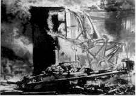
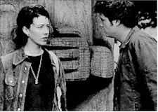
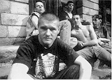

Contents | Features | Reviews | News | Archives | Store

Contents | Features | Reviews | News | Archives | Store
 |
24th Seattle
International by Lyall Bush |
What is it that makes a good film good? An interesting film better? It seems axiomatic of a film festival as expansive as Seattle’s that a time comes when distinctions just fade. The weather has been unusually sunny and humid, for Seattle in June anyway, and it’s easy to let questions flap in the warm wind. Films come up as regularly as ocean waves and the short time between them tends to dissolve the finer differences. In waiting lines conversations, which under other circumstances might range over a film’s meaning and look, its relative heft, crack like melons on the sidewalk. People opt for a hopped-up shorthand, a Beavis-to-Butthead gnashing of syllables: "You see X? I liked it. You like it?" "No, I didn't. I didn’t like it." And on to the next movie. Manure will out, I like to say. But halfway through a film festival with more than 170 feature films the process of winnowing the good, the bad and the indifferent from one another goes just skin deep.
But that’s the cultural juggernaut trimming its sails, too. Last year, Alan Rudolph, who had just wrapped Afterglow, sat on a panel with Wally Shawn thinking about the press of culture on our eyeballs. Rudolph noted, "in the Middle ages people saw, what, a few pictures – the story of Christ in their church. A few icons ...." Point taken. A year later, another 300 or so films in the old Leonard Maltin, and it’s hard to imagine what it could mean to wait for anything to sink in. What, and miss a movie?
An divagating example. Esquire's movie critic, David Thomson, was going deep for The Truman Show a month before the the rest of us in the American press corps (forget America) got its paws on a screening notice. He caught that ball, and at the point I knew Jim Carrey was in a new film I also knew it was the best film of the decade, at least in the estimable Mr. Thomson’s view. And the verdict? It’s okay – better than okay, really. It’s a good movie, a solid, smooth, thoughtful and occasionally poignant entertainment. A little better than Grosse Point Blank, which, flawed as it is, boasts a dozen crossing and re-crossing currents that push and pull at you. At the high-school reunion, for example, there’s the moment when a young mother asks John Cusack, once her classmate, "So, how's your life?" Cusack, droll about his work as a professional assassin, delivers his reply in becoming low key: "In progress," nodding his head. I'd put that moment against any in The Truman Show.
What people say they love, inevitably, is their self most nakedly exposed. Me, I love the rapture of the apocalypse and I can find it, happily, in nooks and crannies, in fugitive moments in films that don’t have the fully realized Pop hook of The Truman Show. It’s there at length in the fiercely calm documentary, Waco: the Rules of Engagement, which stalks the Bureau of Alcohol, Tobacco and Firearms for two hours, peeling layers until we see as through a glass, darkly, that the Feds offed David Koresh that fateful day five years ago. By steadily chilling degrees, the film unmasks the ATF and Janet Reno, shows how they took out Koresh with extreme prejudice. The film nails each fact with damning interviews and undisputable infrared videotape, of ATF vehicles punching holes in the Waco compound, of ATF artillery shelling the buildings in the rear until fire caught and burst. The year is still young, but I can't imagine seeing a braver, tougher documentary appearing this year. And, because of its political volatility, you may have to look hard to find the film on TV any time soon either.
 I'll take my rapture in bursts between otherwise
merely okay or indifferent material, too. Marie Baie des Anges is a torn-up
narrative of two young French kids with no seeming connections to adult life and a fair
bit of hell to raise both before and after they find each other. Set on the Riviera in the
1960s the story is deliberately incomplete, gauzily vague and the director's interest in
it hard to gauge. I heard a number of folks grumbling afterwards about the picture's
kaleidoscope style of editing, but who would resist its shots of stunning, granular
beauty? The director, Manuel Pradal, is a first-timer, and he shows a lyric, wayward eye
that recedes in interest from the what-happens-next material but glues to things like the
way sunlight falls over a young woman's face. On the back of a Vespa, hanging onto one man
or another Pradal’s ingenue, Vahina Giocente, looks like she’s falling up into
grain, into straw – the light is that lovely and physical.
I'll take my rapture in bursts between otherwise
merely okay or indifferent material, too. Marie Baie des Anges is a torn-up
narrative of two young French kids with no seeming connections to adult life and a fair
bit of hell to raise both before and after they find each other. Set on the Riviera in the
1960s the story is deliberately incomplete, gauzily vague and the director's interest in
it hard to gauge. I heard a number of folks grumbling afterwards about the picture's
kaleidoscope style of editing, but who would resist its shots of stunning, granular
beauty? The director, Manuel Pradal, is a first-timer, and he shows a lyric, wayward eye
that recedes in interest from the what-happens-next material but glues to things like the
way sunlight falls over a young woman's face. On the back of a Vespa, hanging onto one man
or another Pradal’s ingenue, Vahina Giocente, looks like she’s falling up into
grain, into straw – the light is that lovely and physical.
Marie, from the Bay of Angels, is older than the kids in Majid Majidi's Iranian film, The Children of Heaven, but they could show her a thing or two about what the Platonic sun on her face alludes to. The Children of Heaven is a tale of fate along the lines of Pather Panchali or The Bicycle Thief. It follows the lives of two elementary school age siblings, a brother of perhaps ten named Ali and his younger sister Zahra, who band together when Ali loses Zahra’s only pair of shoes at the market. The two realize that it will be no good telling their poverty-stricken parents so they begin to share Ali’s old canvas tennis shoes, running to school and back to hand them off so the other one can then run to his school. Zahra never blames Ali, because she realizes it was a mistake, and Ali works hard to make it up to her. When he is awarded a gold pen in school for his grades he gives it to her; and for a moment it seems that the gift actually takes Zahra away from her problem. The film is marked by moments like that in which you do get a direct sense of an ideal fellowship between people. A mark of the film’s graceful sense of irony comes later on when the brother enters a foot race so that he can finish in third place, the prize for which is a pair of shoes. He fails – he finishes first. The specifics of the loss of the shoes, the labyrinth of care the kids take to keep their parents from knowing, are ever in the foreground and you wind up feeling an enormous variety of simple, wrenching emotions for the kids. Marie Baie des Anges regularly slips free of the prisonhouse of narrative for flights in fast cars under a softly bruiting sun. But The Children of Heaven reveals something about God through small but powerful daily decisions. It’s a wholly wondrous film, nowhere more so than in the small leitmotif of the children returning from school each day to drink water from an hose in the courtyard.
Heaven, it seems, or one of its tropes, figures over and over at the festival this year. Meg Richman’s debut film, Under Heaven, is The Wings of the Dove set in 1990s Seattle – a fair film hurt by stiff direction and Richman’s unsteady hand with her actors. She has cast ably – Joely Richardson is here as the dying, only half-duped woman; and Kissed’s Molly Parker plays the Helena Bonham Carter role of nervous intriguer. But Richman accepts first-level emotions from each of her talents – hopeless by any dramatic standards but a major crime in James’ world. The film rarely probes more than one personal conflict at a time. That’s sad, considering how another debut film, Bruno Dumont’s The Life of Jesus, explores clutches of them by seeming to explore none. Dumont is an utterly sure-handed director, and by the end of The Life of Jesus you realize that he is in fact a major new talent in French cinema. Reminiscent of Claire Denis with a kind of documentary gaze, Dumont also has a unique feeling for the queer corners of human obsession and ignorance.
The Life of Jesus isn’t an easy film to like. There are repeating scenes in which five young men without work in a small French village take off on motorcycles out to the countryside, buzzing through it but numbed to the beauty of its green hills, the fertile black rectangles of tilled soil. You hear the burr of their engines and when the boys’ helmets come off afterwards their faces reveal nothing. It would seem an indictment of masculinity except that early on the film focuses on one of the boys, Freddy, and his girlfriend, Marie, whose face is as drained as the boys and as steeped with a who-cares kind of lust in her eyes. The movie, to its credit, neither plays up these blank stares as a central metaphor nor lets them dissolve into blurs in an overdetermined "environment" in which the kids have grown up or live in.
For an hour the film is a series of bleak episodes. The boys ride their bikes, Freddy and Marie kiss, Freddy and Marie have sex, Freddy has a fit, Freddy trains his finch to warble. It’s more like a story about what people do when there is nothing to do: they groove hard on a few things they can do well. This pattern is broken only when Kadder, the son of what seems the town’s only Arab family, begins paying attention to Marie, who likes it. The boys grow wild with a collective panic that begins to build and the title comes near to touching on its title. The Life of Jesus doesn’t sell itself even a little though – most of what this film means is in your hands. The boys aren’t, by any stretch of the imagination, a wild bunch, or wild ones, nor are they rebels sans cause. They aren’t buff enough or handsome enough or in enough of a Puritanical town for that kind of symbolism. They are lashing out, if at anything, at the wheel of seasons, at the monumental greens and blacks of the earth and its fallow fields around them. Zooming out to the countryside then buzzing back into town over and over, they make a round thing, a loop that’s also a large, loose, baggy zero. In the middle of the blissful French countryside they’ve concocted a blank that resonates with the numb concentration on their faces. It’s like a myth about God told by people who couldn’t begin to imagine what they’d ever want from Him.
Lars von Trier, on the other hand, seems to know gods and
devils intimately. The director of Breaking the Waves
has sent his The Kingdom II, a near five-hour follow-up to his 1994 The Kingdom.
 Von
Trier returns to the ganglia of his obsessions one more time to explore a large-scale
late-twentieth century war, in a hospital, between the powers of light and darkness (well,
mostly forms of darkness which, as we know, are more fun). In this case both converge on a
particularly active portal between the rational and the irrational universe in a dank,
brownish-green hospital in Copenhagen. Someone at the screening – it was an all-day
marathon at the Egyptian which got going at noon with the magnificent The Kingdom
and contined, with breaks, on through past midnight to the end of a cliffhanging The
Kingdom II – shrugged his shoulders afterwards and said, "Well, it’s
only TV." He didn’t know what I thought I was expecting. But surely this is only
TV the way Ben Hur is only a movie. Still, the film was bloated. Where the original
film felt almost too short at around four hours this film feels like a thin rehash, and
with some disappointing failures of the imagination. Stig Helmer, the scheming Swedish
neurosurgeon, is back from Haiti with a voodoo potion to kill Krog, his blond nemesis who
runs the black market in hospital supplies in the basement. There is much apparent death
and therefore symbolic rebirthing thereafter too. Rigmor, still packing a .45 from the
first film (where she was last seen firing on hospital rats), smiles and welcomes Stig
back, a trigger-happy look on her face. And so on. The ghosts are back, in larger numbers,
but somehow they are less haunting for being so present. The retarded dishwashers are
back, again playing chorus to the film, but their conversations this time are more
faux-spooky than spooky ("is it a glass or is it a vase?" one asks the other,
holding up what is evidently a glass). The baby with the adult’s head from the first
film grows at a comic-poignant speed, so fast that his bones can’t support his
gigantism. Throughout, the film hoists comedy on a petard and undercuts all of the first
film’s hard-won effects with a seriocomic conflict between past crimes in the
hospital and present circumstances, the whisper of a world war about to erupt just outside
the skin of our own. Yes, The Kingdom II is like TV, when TV falls into the trap of
repeating success ad nauseum.
Von
Trier returns to the ganglia of his obsessions one more time to explore a large-scale
late-twentieth century war, in a hospital, between the powers of light and darkness (well,
mostly forms of darkness which, as we know, are more fun). In this case both converge on a
particularly active portal between the rational and the irrational universe in a dank,
brownish-green hospital in Copenhagen. Someone at the screening – it was an all-day
marathon at the Egyptian which got going at noon with the magnificent The Kingdom
and contined, with breaks, on through past midnight to the end of a cliffhanging The
Kingdom II – shrugged his shoulders afterwards and said, "Well, it’s
only TV." He didn’t know what I thought I was expecting. But surely this is only
TV the way Ben Hur is only a movie. Still, the film was bloated. Where the original
film felt almost too short at around four hours this film feels like a thin rehash, and
with some disappointing failures of the imagination. Stig Helmer, the scheming Swedish
neurosurgeon, is back from Haiti with a voodoo potion to kill Krog, his blond nemesis who
runs the black market in hospital supplies in the basement. There is much apparent death
and therefore symbolic rebirthing thereafter too. Rigmor, still packing a .45 from the
first film (where she was last seen firing on hospital rats), smiles and welcomes Stig
back, a trigger-happy look on her face. And so on. The ghosts are back, in larger numbers,
but somehow they are less haunting for being so present. The retarded dishwashers are
back, again playing chorus to the film, but their conversations this time are more
faux-spooky than spooky ("is it a glass or is it a vase?" one asks the other,
holding up what is evidently a glass). The baby with the adult’s head from the first
film grows at a comic-poignant speed, so fast that his bones can’t support his
gigantism. Throughout, the film hoists comedy on a petard and undercuts all of the first
film’s hard-won effects with a seriocomic conflict between past crimes in the
hospital and present circumstances, the whisper of a world war about to erupt just outside
the skin of our own. Yes, The Kingdom II is like TV, when TV falls into the trap of
repeating success ad nauseum.
Another kind of war is found in Bill Condon’s third film, Gods and Monsters (following The Candyman and Sister, Sister). It’s like excellent Sunday-evening TV. A bio-pic about the dotage of James Whale, the great, forgotten director of Frankenstein and Bride of Frankenstein, it’s buoyed up on the talent of Ian McKellan as the director who has long-since retreated from the nasty world of the studios into his palatial estate with his paintings and sketches of nude men. McKellan, whose Richard III, proved, if proving was ever needed, that he could play great, lustful craziness, exumes Whale as a harmless, witty boy-watcher whose memories of the past have begun to overwhelm him. Brendan Fraser plays the Rock Hudson part (I’m thinking of Douglas Sirk’s All That Heaven Allows here, in which Hudson’s hunky gardener is seduced by Jane Wyman) and plays it well. The film has a flaw right down its middle however, and that’s that none of this transcends your basic fading star in his senility phase. It’s a good film hampered by a theaterish treatment (most of the scenes are between McKellan and Fraser and are played out in one or two rooms of Whale’s huge house) and the fact that there’s not a whole lot to say. What’s fine about the film is that it manages to stay interesting despite its drawbacks. [Click here to read the full review][Click here to read Elias Savada's interview][Click here to read Sean Axmaker's inteview]
And if you can be able to say that about a film halfway through a festival like this it must be pretty potable. I may have to see it again one day – see if I’m right.
Contents | Features | Reviews | News | Archives | Store
Copyright © 1999 by Nitrate Productions, Inc. All Rights Reserved.